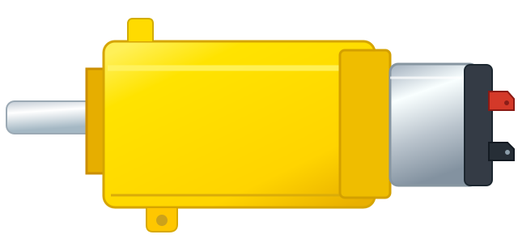

01
Sua bancada está vaziaEscolha as peças no catálogo e coloque-as onde quiser.
Componentes0 / 9 peças
Aguardando montagem
Arraste as peças para a bancada e conecte os terminais.
PISTA DE TESTES
Hora de dirigir! 🏁
Use as teclas WASD, setas ou os controles na tela.
🔒Circuito não conferido
Monte as peças, faça as ligações e inicie a simulação.
PAINEL DO CARRINHOAguardando montagemControles virtuais

Motor esquerdoParado
Motor direitoParado
A pista é virtual. Nenhum comando é enviado ao carrinho físico.